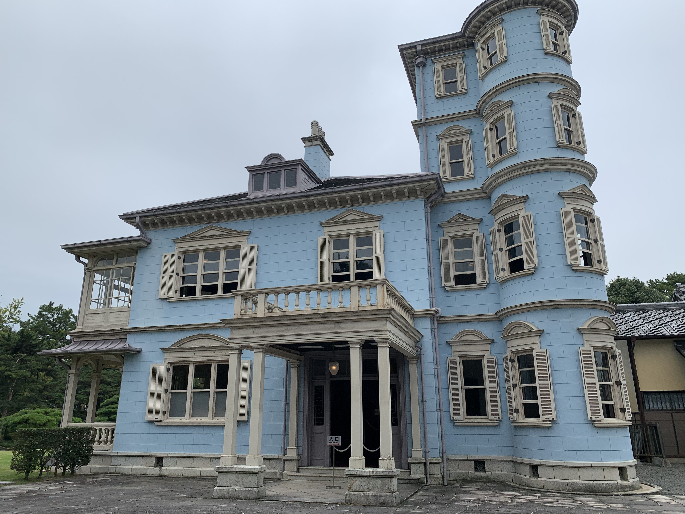
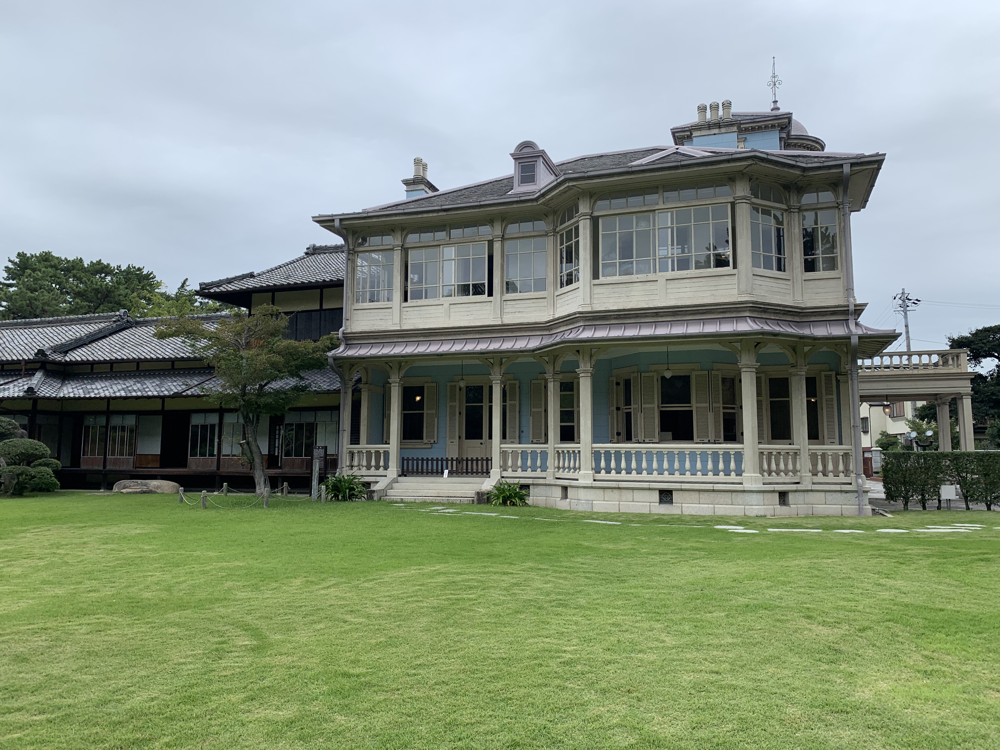
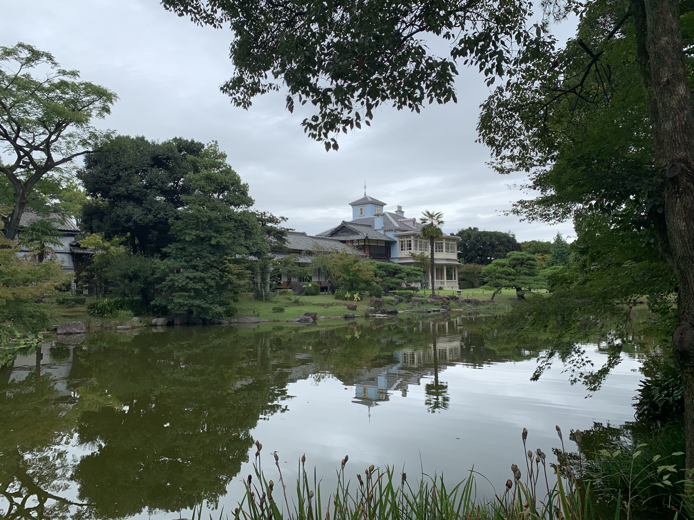
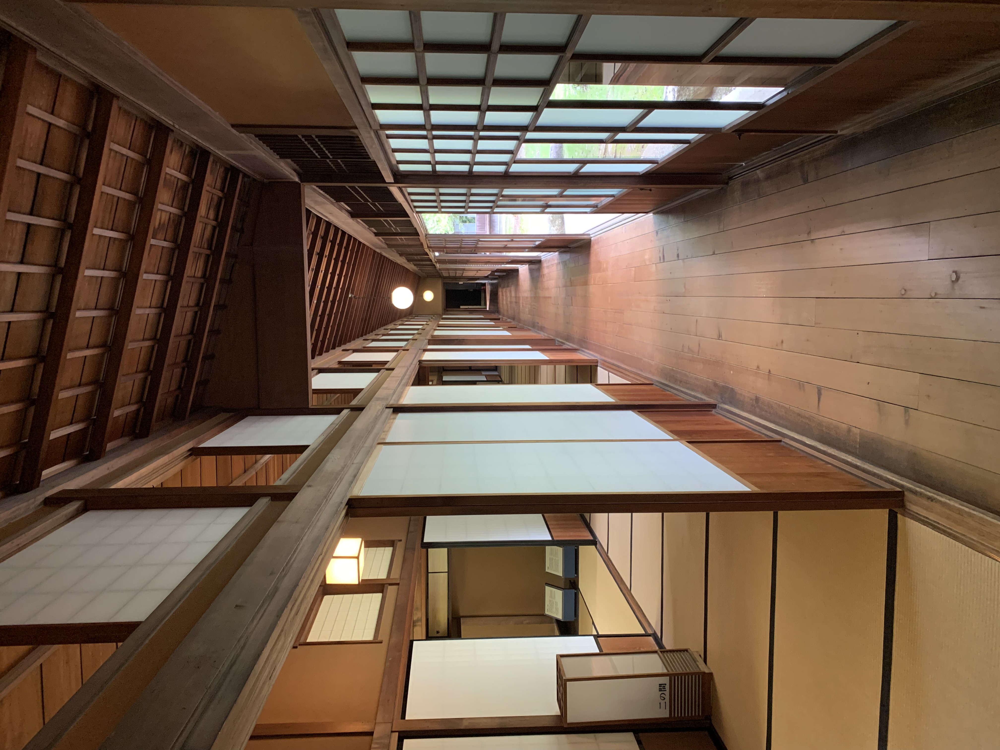
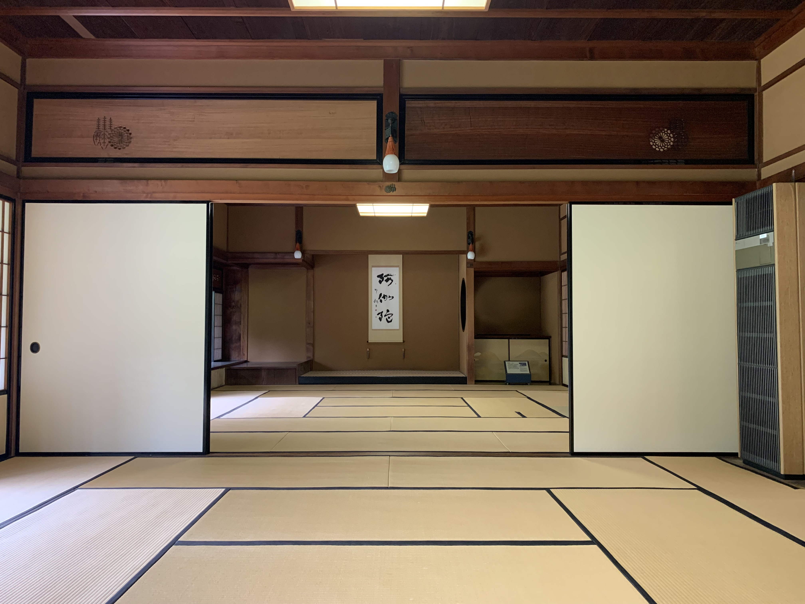
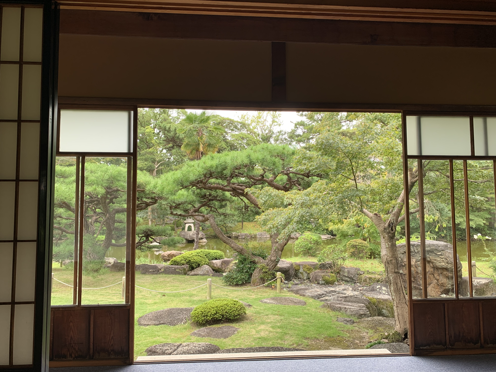
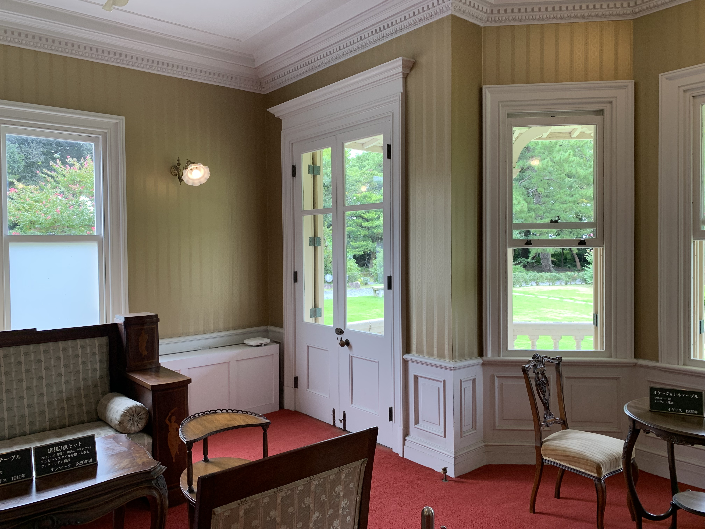

＜for ループを使って２次曲線を描いてみました！＞
レベル底くてすみません!!
・・・ なのでこちらも頑張って作ってみました！
**********＜六華苑のご紹介＞**********
ちょっとジブリの世界を感じられるかも.....
- 三重県桑名市にあり、二代諸戸清六の邸宅として大正2年（1913年）に完成。
- 六華苑は鹿鳴館の設計で有名なイギリス人建築家ジョサイア・コンドル設計。
- 和洋の様式が調和した明治・大正期を代表する貴重な文化財で平成9年に国の重要文化財に指定されています。
- 庭園は一部を除き平成13年に国の名勝に指定されました。

↑ 建物の外観はこんな感じ

↑ 庭から見るとこんな感じ

↑ 庭の奥の方から見るとこんな感じ

↑ 建物内部の廊下部分

↑ 建物内部の和風部分

↑ 建物和室から庭を臨むと

↑ 建物洋風部分です
ジブリ好きでない方も一度訪れてみてはいかがでしょうか。